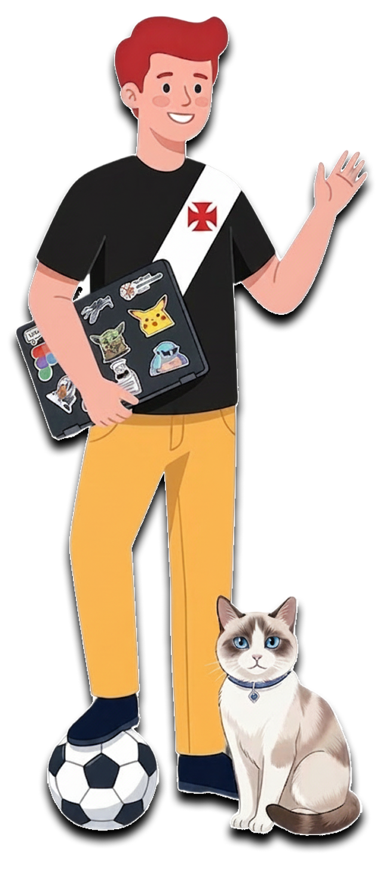

Opa Lance, eu sou o Paulo!
UX Designer Junior
Crio experiências digitais que vendem.
De campanhas de tráfego, estratégias de negócio até e-commerces/sites completos.
Vivo no Rio de Janeiro. Conheça meu portfolio


Estudante de IA/UX Design no Programa UX Unicórnio

Estudante de UI Design no Design Boost

Adquiri Inglês Fluente em 5 anos
Espanhol Básico em 1 ano na Yes Idiomas